6. Trực quan hóa với Matplotlib¶
6.1. Cơ bản về matplotlib¶
Sử dụng và import matplotlib
[1]:
import numpy as np
import matplotlib as mlt
import matplotlib.pyplot as plt
%matplotlib inline
[2]:
# Sử dụng style plot
plt.style.use('classic')
[3]:
# Ví dụ 1
x = np.linspace(0, 10, 100)
[4]:
plt.plot(x, np.sin(x))
plt.plot(x, np.cos(x))
plt.show()
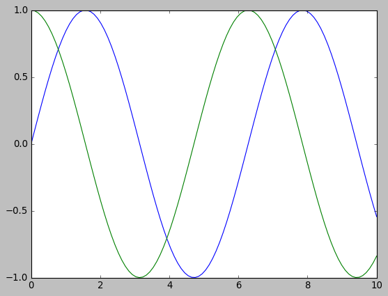
6.2. Điều chỉnh chi tiết plot¶
[5]:
x = np.linspace(0, 10, 100)
fig = plt.figure()
plt.plot(x, np.sin(x), '-')
plt.plot(x, np.cos(x), '--')
[5]:
[<matplotlib.lines.Line2D at 0x2005d719f28>]
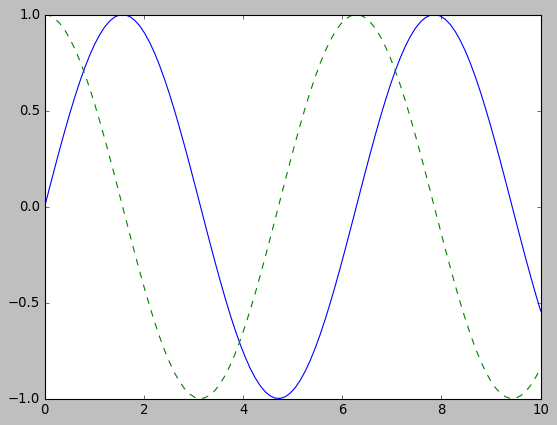
[16]:
# Save plot
fig.savefig('my_figure.png')
6.3. Hai biểu đồ con trong biểu đồ lớn¶
6.3.1. Matlab style¶
[6]:
# Tạo figure
plt.figure()
[6]:
<Figure size 640x480 with 0 Axes>
<Figure size 640x480 with 0 Axes>
[7]:
# Tạo khu vực 2 hàng, 1 cột, 1 panel
plt.subplot(2,1,1)
plt.plot(x, np.sin(x))
plt.subplot(2,1,2)
plt.plot(x, np.cos(x))
[7]:
[<matplotlib.lines.Line2D at 0x2005d63a8d0>]
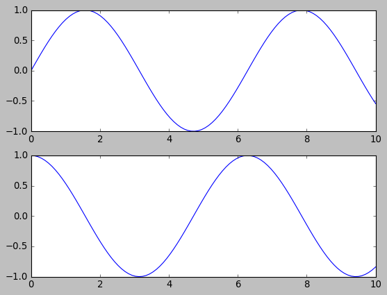
Lưu ý: Hai biểu đồ phải được đặt cùng trong 1 cell
6.3.2. Object oriented style¶
Lưu ý: Khi sử dụng plt.subplots(), kết quả trả ra là 2 object dạng figure và axes trong matplotlib. - figure là 1 đối tượng của class plt.Figure, bao gồm tất cả thành phần của biểu đồ (trục, label, đồ thị) - axes là khung thể hiện của figure
[33]:
fig = plt.figure()
ax = plt.axes()
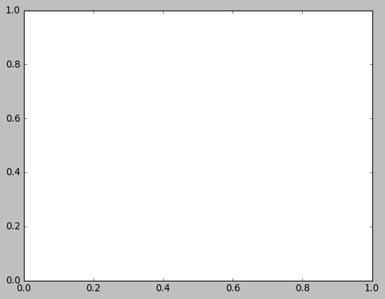
[23]:
fig, ax = plt.subplots(2)
ax[0].plot(x, np.sin(x))
ax[1].plot(x, np.cos(x), '--')
[23]:
[<matplotlib.lines.Line2D at 0x2005f64ae10>]
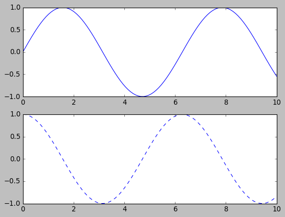
6.4. Điều chỉnh các thành phần cơ bản¶
6.4.1. Biểu đồ đường¶
[34]:
plt.style.use('seaborn-whitegrid')
[36]:
fig = plt.figure()
ax = plt.axes()
x = np.linspace(0, 10, 100)
ax.plot(x, np.sin(x))
[36]:
[<matplotlib.lines.Line2D at 0x2cb42d69518>]
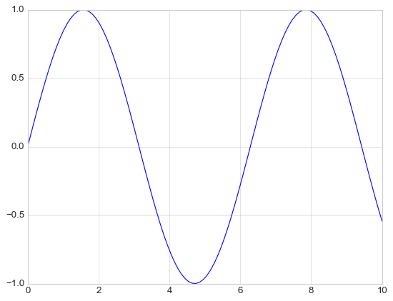
[40]:
plt.plot(x, np.sin(x), color = 'red')
plt.plot(x, np.cos(x), color = 'blue', linestyle = 'dashed')
[40]:
[<matplotlib.lines.Line2D at 0x2cb42eb3c88>]
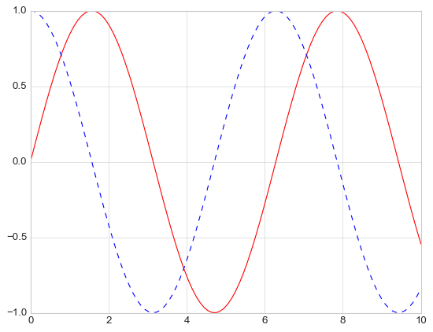
[44]:
# Điều chỉn định dạng
plt.plot(x, x, linestyle = '-')
plt.plot(x, x + 1, linestyle = '--') # dash
plt.plot(x, x + 2, linestyle = '-.') # dash dot
plt.plot(x, x + 3, linestyle = ':') # dot
[44]:
[<matplotlib.lines.Line2D at 0x2cb442da9e8>]
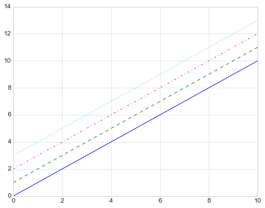
6.4.2. Điều chỉnh xlim, ylim¶
[48]:
plt.plot(x, np.sin(x))
plt.xlim(-1, 11)
plt.ylim(0.5, 1)
[48]:
(0.5, 1)

[51]:
# Cách 2
plt.plot(x, np.sin(x))
plt.axis([-1, 11, 0.5, 1])
[51]:
[-1, 11, 0.5, 1]
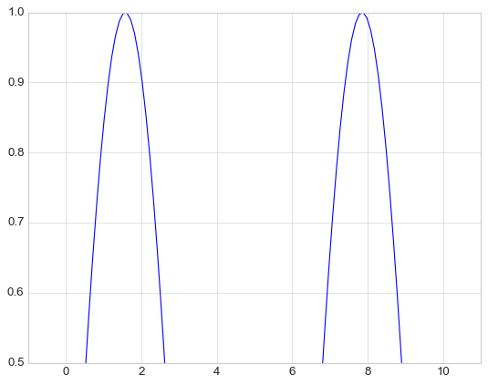
6.4.3. Điều chỉnh tên¶
[54]:
plt.plot(x, np.sin(x))
plt.title('Biểu đồ sin')
[54]:
Text(0.5, 1.0, 'Biểu đồ sin')
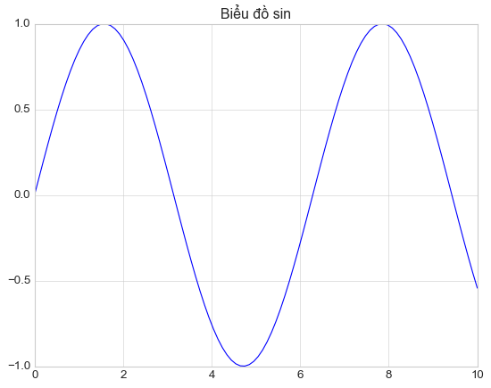
6.4.4. Điều chỉnh chú giải¶
[60]:
plt.plot(x, np.sin(x), label = 'sin')
plt.plot(x, np.cos(x), label = 'cos')
plt.legend()
plt.axis('equal')
plt.title('Đồ thị sin và cos')
[60]:
Text(0.5, 1.0, 'Đồ thị sin và cos')
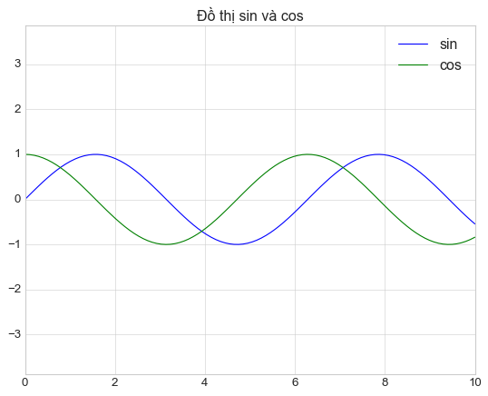
6.4.5. Phương pháp ax¶
Lưu ý: Các phương pháp sử dụng hàm plt và axes là tương đương nhau
plt.xlabel()→ax.set_xlabel()plt.ylabel()→ax.set_ylabel()plt.xlim()→ax.set_xlim()plt.ylim()→ax.set_ylim()plt.title()→ax.set_title()
[62]:
ax = plt.axes()
ax.plot(x, np.sin(x))
ax.set(xlim = (0, 10), ylim = (-2, 2),
xlabel = 'x', ylabel = 'sin(x)',
title = 'Biểu đồ sin(x)')
[62]:
[(-2, 2),
Text(0, 0.5, 'sin(x)'),
(0, 10),
Text(0.5, 0, 'x'),
Text(0.5, 1.0, 'Biểu đồ sin(x)')]
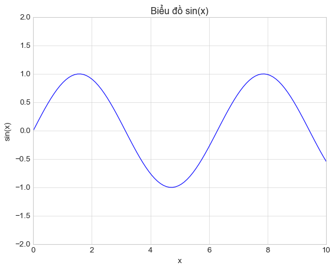
6.5. Các loại biểu đồ thường dùng¶
6.5.1. Scatter plot¶
[67]:
x = np.linspace(0, 10, 30)
y = np.sin(x)
plt.plot(x, y, 'o')
plt.ylim(-1.5, 1.5)
[67]:
(-1.5, 1.5)
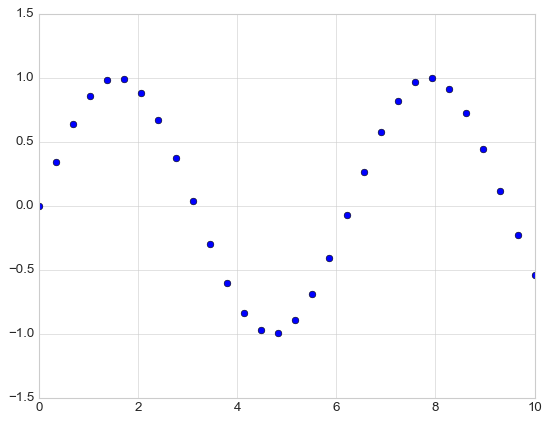
[70]:
plt.plot(x, y, '-ok')
plt.ylim(-1.5, 1.5)
[70]:
(-1.5, 1.5)
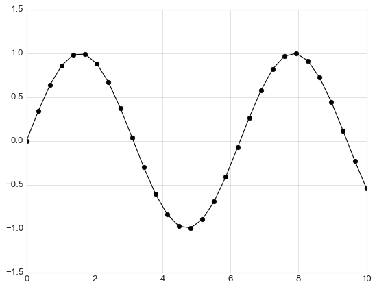
6.5.2. Sử dụng plt.scatter¶
plt.scatter cho phép linh hoạt hơn so với plt.plot nhưng tốc độ xử lý sẽ chậm hơn
[73]:
rng = np.random.RandomState(0)
x = rng.randn(100)
y = rng.randn(100)
colors = rng.rand(100)
sizes = 1000 * rng.rand(100)
plt.scatter(x, y, c=colors, s=sizes, alpha=0.3,
cmap='viridis')
plt.colorbar(); # show color scale
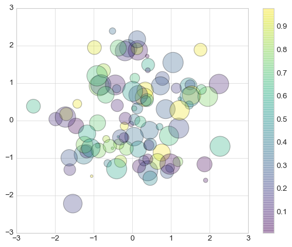
6.5.3. Contour plot¶
[75]:
def my_value(x, y):
return np.sin(x) ** 10 + np.cos(10 + x*y) * np.cos(x)
[77]:
x = np.linspace(0, 5, 50)
y = np.linspace(0, 5, 40)
X, Y = np.meshgrid(x, y)
Z = my_value(X, Y)
[83]:
plt.contour(X, Y, Z, colors = "blue")
[83]:
<matplotlib.contour.QuadContourSet at 0x2cb4675ddd8>
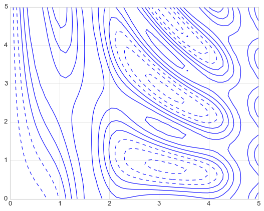
[86]:
plt.contour(X, Y, Z, 20, cmap='RdGy')
plt.colorbar()
[86]:
<matplotlib.colorbar.Colorbar at 0x2cb4696b860>
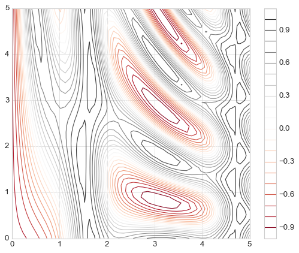
[88]:
plt.contourf(X, Y, Z, 20, cmap='RdGy')
plt.colorbar();
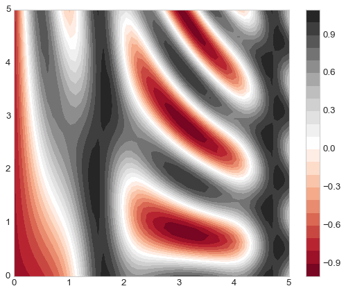
6.5.4. Histogram¶
[90]:
x = np.random.normal(0, 1, 1000)
plt.hist(x, color = 'steelblue', alpha = 0.7)
[90]:
(array([ 12., 42., 85., 118., 194., 217., 189., 94., 39., 10.]),
array([-2.74994879, -2.21471452, -1.67948026, -1.14424599, -0.60901173,
-0.07377746, 0.4614568 , 0.99669106, 1.53192533, 2.06715959,
2.60239386]),
<a list of 10 Patch objects>)
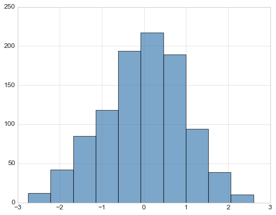